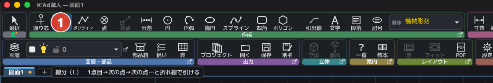
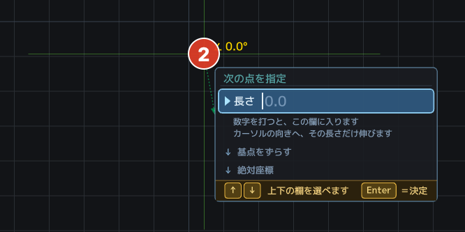
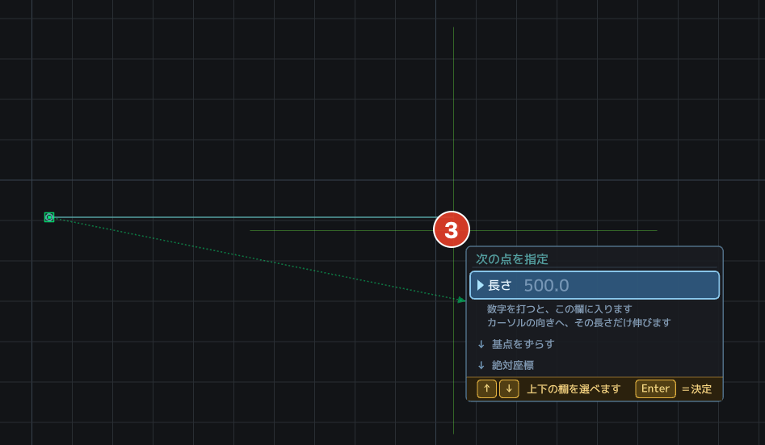
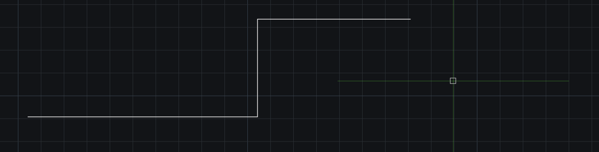
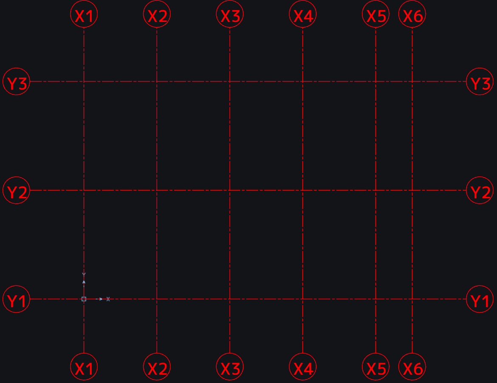
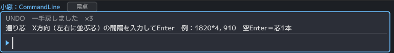
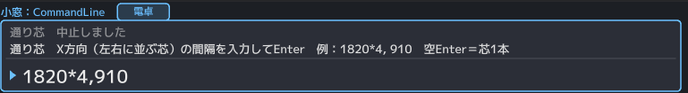
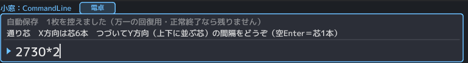

L / LINE（線分）
- ①リボン「線分」か、小窓に L →Enter。

① - ②1点目をクリック（または 1000,500 と絶対座標で）。

② - ③2点目をクリック（@1000,0 や、向き＋数字でも）。

③ - ④そのまま連続で引けます。やめるときは Esc。

④
PL / PLINE（ポリライン）
- ①リボン「ポリライン」か、小窓に PL →Enter。
- ②1点目→次の点→次の点…とクリック（数字での指定も線分と同じ）。
- ③右クリックか Enter で完成＝ここで「一本の図形」になります。U を押すと、打った頂点を一つだけ戻せます。Esc は描きかけを捨てます。
閉じたポリラインにする】（3D の押し出しで立体になるのは、閉じた形です）
- 描いている途中で C を押す＝最後の点から始点へ辺を足して閉じます。小窓に C（または 閉じる）と打っても同じです。
- 始点をクリックしても閉じます。描いている途中の点にも吸い付くので、始点に「端点」の印が出たらクリック＝そのまま閉じた形になります。
- 閉じるには頂点が3つ以上要ります（2つでは往復の線にしかなりません）。
- 線分との違いは「一本かどうか」だけです。線分は一手ごとに別々の線が生まれ、ポリラインは終えたときに一本にまとまります。
- 外形線・敷地の境界・配管の経路など、あとで丸ごと選びたい線に。
- 他所のCADのポリラインも一本のまま開き、保存でも一本で返します。
- トリムでは、ポリラインをそのまま切れます（一本のまま）。閉じたポリラインを切ると、開いた一本になります。ふくらみ（円弧の辺）も、途中で切れば正しく分かれます。自分と交わった所でも切れます（行き過ぎた尻尾を落とせます）。切った両端がぴったり出会ったら、閉じたポリラインになります。
- 基準線にも選べます（ここまで刈る・ここまで延ばす、の相手）。
- フィレット・面取りは、ポリラインの角に効きます（十五期百三十九号）。隣り合う二つの辺をクリックすると、その間の角が丸く（斜めに）なります。※弧を別に産まないので、一本のままです。他所のCADでも一体で開きます。
- 複線（O）は、ポリラインを丸ごと平行に太らせます（十五期百四十号）。
- 分割（DIV）は、全長を弧長で等分して点を並べます。閉じた形はちょうど count 個・開いた形は両端に置かず count-1 個。
C / CIRCLE（円）
- ①小窓に C →Enter。②中心をクリック。
- ③円周が通る点をクリック。半径を数字で決めるなら、小窓に 4000・R2000・D8000（直径）のように打ちます。
A / ARC（3点円弧）
- ①リボン「円弧」か、小窓に A →Enter。
- ②始点→③弧が通る点→④終点、と3回クリック。3点目からは弧がカーソルについてきます。Escは一手だけ戻る＝終点で迷ったら通過点から置き直せます。
- 線の端点や交点にスナップが効くので、つながる弧が正確に。
- PDFの下絵をなぞるときは、曲線の上を3回突くだけです。
EL / ELLIPSE（楕円）
- ①リボン「楕円」か、小窓に EL →Enter。
- ②軸の端点→③軸のもう一端→④残り半分の幅、と3回クリック。3点目からは楕円がカーソルについてきます。Escと右クリックは一手だけ戻ります。
- 3点目を軸より長く取ると、そちらが長軸の縦長になります（長いほうが自動で長軸＝本家と同じ約束）。
- 保存はDXFのELLIPSEそのまま＝他所のCADでも楕円のまま開けます。
SPL / SPLINE（スプライン）＝自由な曲線
- ①リボン「スプライン」か、小窓に SPL →Enter。
- ②曲線に通したい点を、次々クリック（3点以上）。打つそばから、なめらかな曲線がカーソルについてきます。
- ③右クリックか Enter で完成＝一本の曲線になります。U＝打った点を一つ戻す／Esc＝描きかけを捨てる（PLと同じ）。
- 曲線は打った点を全部、正確に通ります（雲形定規の作法）。
- 打った点（通過点）は、あとから吸着で掴めます。通り芯や他の線を、その点にぴたりと合わせられます。
- 敷地の等高線・道路の線形・意匠の曲線などに。
- 保存はDXFのSPLINEそのまま＝他所のCADでも一本の曲線のまま開け、通過点も一緒に渡るので、あちらでそのまま編集できます。
REC / 四角
- ①小窓に REC →Enter。②1点目→対角の点をクリック。大きさで決めるなら、2点目の代わりに 700,700（幅,高さ）。
- REC C 10＝面取り10の四角／REC F 15＝角丸R15。0 を打てば解除です。
- 四角は一体のポリラインです（十五期百三十九号）。どの辺をクリックしても四角ぜんぶが選べます（一発選択）。四隅と四辺の中点は、今までどおり全部スナップできます。複線（O）は四角ごと平行に、分割（DIV）は周りを等分します（十五期百四十号）。一辺だけ使いたい日は X（分解）で。
POL / ポリゴン（正多角形）
- ①リボン「ポリゴン」か、小窓に POL →Enter。POL 6＝正六角形（辺の数を先に決められます）。
- ②中心をクリック。③半径の点をクリック（数字＋Enterでも）。
- 描いている間、画面の下に帯が出ます。辺の数（3 4 5 6 8 10 12）と、内接／外接をそこで選べます。← → でも辺の数を一つずつ増やしたり減らしたりできます。
- 内接＝角が円に載る（半径は中心から角まで）。
- 外接＝辺が円に接する（半径は中心から辺まで）。※六角ボルト・ナットの「二面幅」は外接です。二面幅24のナットなら、外接で半径12。内接で12を打つと、ひと回り小さい別の部品になります。
- 産まれるのは一体の閉じたポリライン（四角と同じ）。一発で選べて、ハッチも複線もそのまま効きます。
- 向きは、半径の点をどちらに取るかで決まります（真上を指せば頂点が上、という具合）。
GRID / 通り芯

- ①リボン「通り芯」か、小窓に GRID →Enter。

① - ②下の帯で、ピッチと本数を決めます。Xピッチ 1820・X本数 6 ＝1820の間隔で、芯が6本（列の数）。Yピッチ・Y本数も同じ書き方です。ピッチ欄には「1820*4, 910」と並びも打てます（不等ピッチ）。＝910 や 455 が混じる実務の芯は、こちらで。

② - ③置く場所をクリック。スナップが効くので、図枠の角にもぴたりと置けます。原点（0,0）に置くなら【原点に置く】を押します。

③
打つそばから、格子のゴーストが育ちます（置く前に姿が見えます）。【符号 紙mm】＝符号の丸（X1・Y1）の直径。紙のmmで打ちます（JIS A 0150 は 9mm）。図面ではページ設定の縮尺の分母倍になります（1:100 なら直径 900）。※狭いピッチ（910 など）で符号が重なる日は、ここを小さくします。＝全部の符号が同じ大きさのまま、きれいに収まります。【延長】＝芯を建物の外へ伸ばす長さ（図面の単位）。0 か 空Enter で自動（丸の半径×4）に戻ります。
W / 壁
- ①リボン「壁」か、小窓に W →Enter。距離は小窓に W 100,100（＝厚200）。W 0,150 ＝クリックした線の位置に一本＋150（0＝スナップ点そのもの）。
- ②点を順にクリックします（線分やポリラインと同じ呼吸です）。二点で終わりにするなら、そこで右クリックか Enter＝一本の壁になります。三点、四点と続ければ、曲がり角は自動で継がれます（面がつながります）。
- ③右クリックか Enter で置く。Esc＝打ちかけを捨てる／U＝置いた壁を戻す。
- F8＝直交（水平・垂直だけ）。極トラも効きます。
- 数字＋Enter でも打てます（「通り芯から2000」がそのまま言えます）。
- 柱（閉じたポリライン・円）を貫くと、柱の中で切れます（柱残しの術）。
- 鋭すぎる角は、継がずに角を落とします（細い針が伸びるのを避けるため）。
WW / 柱まわし＝柱を順にクリックすると、壁が回る
- ①リボン「柱まわし」か、小窓に WW →Enter。
- ②下の帯で決めます。【厚】150 のように打ちます（式も打てます）。【外面合わせ／センター／内面合わせ】＝壁をどこに置くか。外周の壁は柱の外面にツラ、内部の壁は芯のセンター、が現場の普通です。【一体化／柱残し】＝柱の輪郭も溶かして一本の外形にするか、柱を残すか。
- ③柱を順にクリック。柱の中ならどこでも構いません（角を狙わなくてよい）。柱でない所を押すと、吸着した点が芯の角になります（柱の無い角はそこで曲がる）。
- ④最初の柱へ戻ると、一周して置きます。途中で終えるなら右クリックか Enter。開いたまま置くときは「進む向きの左」を内側と見ます。逆なら逆順に。
- 角も丁字も自動で繋ぎます。開口部は、そこだけ避けて打ってください。
- U＝打った柱を一つ戻す／Esc＝打ちかけを捨てる。置いた後は U ひと押しで丸ごと戻ります。
DT（文字記入）＝一行の文字を、枠で置く
- ①小窓に DT →Enter（DT 5＝はじめから字高5・DT 右下＝基準の指定）。リボン「作成」の【文字】ボタンでも同じです。
- ②文字の入る枠を、対角の2点でとります（枠の高さが、そのまま字高になります。角はスナップで正確にとれます）。🔑四角を先に描いて選んでから DT＝その四角がそのまま枠に（四角は残ります）。🔑表のセルや図枠の中なら、帯の【枠の中をクリック】＝一回押すだけで枠に。
- ③その場で一行を打って Enter＝確定（✓ボタン・枠の外クリックでも）。Esc＝中止。改行はありません（改行のある注記は MT へ）。
- ④文字は、選んだ基準のとおりに枠へ付きます（基準【右下】なら枠の右下に、【中央】なら枠のど真ん中に）。
文字の基準（九マス）は、いつでも変えられます
- 枠の下の帯の九マスを押すと、打っている最中でも変わります。打ちかけの字が、枠の中でその場で動いて見えます（見せたものが本当）。
- 字高も帯の欄でいつでも直せます（式も打てます。例：7*2）。
- 🔑字高の欄は、はじめから【紙のmm】です（帯の二択・既定）。3.5 と打てば、1:50 の図面では 175 で置かれ、紙には 3.5mm で刷られます。縮尺の掛け算は道具の仕事。帯に「＝図面では 175（1:50）」と結果が出ます。これは打つ時の翻訳で、置いた字は 175 のまま動きません（人が決めた大きさに、道具は触りません）。あとで縮尺を替えても字は 175 のまま＝紙に付いてくる字にしたい時は、プロパティ（PR）の「大きさ」で【紙のmm】に付け替えます（選んだ字だけ）。今までどおり図面の単位で打ちたい時は帯の【図面の単位】を押します。
- 置いた文字はダブルクリックで打ち直せます（回転した文字も、その角度のまま）。
文字の書体＝標準・細・太・機械彫刻から選べます
- 「線種・寸法・文字」の帯（リボンの下）に【書体】の欄が常にあります（画層の欄と同じ作法）。▼を押すと一覧が落ち、各書体の顔で名前が並びます。選ぶと、これから打つ文字の書体が替わります。
- 置いた文字を選んでから一覧で選ぶと、その文字の書体が替わります（何本でも一度に・Uで戻せます）。選んだ文字の書体は、欄が水色になって名乗ります。プロパティの板の「書体」の行でも見られ、押すと次の書体へ。
- 帯の【書体】の欄を押すと、棚を一つずつ巡ります（打っている最中でも変わります）。
- ページ設定の板の「文字の書体」の行でも、名前を押して選べます（各書体の顔で並びます）。
- 小窓では 書体 機械彫刻（英字なら FONT kikai）。書体 ? で棚の中身が出ます。
- 機械彫刻＝1970年代の機械彫刻用標準書体を再現した書体（f.k 機械彫刻・作者 Kim さん）。φ・±・⌒・∠ や一部の漢字は持っていないので、その字だけ標準の書体で出ます。
- BIZ UDゴシック・BIZ UD明朝（モリサワ・OFL）も積んであります（Mac・Windows。Web版には積んでいません）。
- この机の定番も▼に並びます（Mac＝ヒラギノ角ゴシック・ヒラギノ明朝／Windows＝MS ゴシック・MS 明朝・メイリオ・游ゴシック）。机に無い書体は並びません。
- 他所の図面が名乗る書体（ＭＳ ゴシック・Arial など）は、この机にあればその書体で描き、無ければ標準で代替します（本家の代替フォントと同じ作法）。※Web版は同梱の書体だけです。
- 自分の書体を使うには、▼の一覧の足元「＋ 書体を足す…」で開くフォルダ「書体」にTTF/OTF を置いて、K'Ad を開き直します（▼に並びます。小窓なら 書体 ファイル名）。
- 選んだ書体は図面の文字スタイル（STYLE）として保存されます＝他所のCADでも同じ書体名で開きます。
MT（段落文字）＝改行のある注記を、枠の中へ流し込む
- ①小窓に MT →Enter（MT 5＝はじめから字高5）。リボン「作成」の【段落】ボタンでも同じです。🔑四角を先に描いてあるなら、それを選んでから MT＝その四角が、そのまま枠になります。（`REC 590,300` と数字で描けば、枠を正確に決められます）※選んだ四角はそのまま残ります（枠として借りただけ）。図枠や表の罫線を枠に使っても、線は一本も消えません。🔑表のセルや図枠の中に書くなら、帯の【枠の中をクリック】へ（Tabでも）。その部屋を一回押すだけで、囲まれた範囲がそのまま枠になります。（表の罫線は通し線なので、セルは「図形」としては選べません。だから部屋のほうを指します）
- ②文章の入る枠を、対角の2点でクリック。※枠から取るのは幅だけです（＝折り返しの幅）。縦は文章が増えれば下へ育ちます。字高は枠の高さでは決まりません。帯の【字高】の欄の値（はじめは 3.5）で打ち始めます。枠が決まると、帯に【幅】と【字高】の欄が並びます。どちらも押してその場で打ち替えられます。
- ③枠の中へ文章を打ちます。・Enter＝改行（文字記入のEnterとは意味が違います）・いちばん下の行で↓を押しても改行になります・幅からはみ出す字は、打っている最中に自動で折り返します（置いた後の姿と、同じ折れ方で見えています）
- ④直したい所は、ワードと同じように選べます。・枠の中をクリック＝そこにカーソルが移ります・押したまま引く＝反転（青くなった分が「選んだ分」）・Shift＋矢印・Home・End でも、反転を伸ばせます・Ctrl+A（Macは⌘A）＝本文をぜんぶ反転・反転したまま打てば置き換え、BackSpace／Delete でその分だけ消えます※引いている途中で枠の外へ出ても、反転は続きます（戻ってくれば繋がります）。
- ⑤選んだ字は、コピー・切り取り・貼り付けができます（ワードと同じ指）。・Ctrl+C（Macは⌘C）＝コピー／Ctrl+X＝切り取り／Ctrl+V＝貼り付け・メモ帳・表計算・他所のCADからも、そのまま貼れます・反転したまま貼れば置き換え、何も選んでいなければカーソルの所へ入ります※一行の文字（DT）に、改行の入った文章を貼ると、改行は空白ひとつになります（一行の器なので。落として詰めると、次の行が前の行の尻に生えます）。※貼った字は、いま帯で灯っている飾りを着ます（打った字と同じ扱い）。飾りそのものは持ち回りません＝クリップボードは、素の字だけを運びます。
- ⑥飾り（太字・斜体・下線・上線・取り消し線）は、枠の下の帯で。・反転してから押す＝その分に掛かります（もう一度押すと外れます）・何も選ばずに押す＝これから打つ字に掛かります（ワードと同じ）・太字は Ctrl+B、斜体は Ctrl+I、下線は Ctrl+U（Macは⌘B・⌘I・⌘U）でも。灯っているのが、いまの状態です※太字は、他所のCADでは太くならないことがあります（DXFは書体の名前で太字を表す決まりで、うちは書体名を勝手に足さないことを選びました）。・斜体は、字を15度たおして描きます（字送りは変わりません）・取り消し線は、訂正・削除の印に使います※飾りはDXFの決まりどおりに保存されるので、他所のCADでもそのまま出ます。
- ⑦字の大きさは、帯の右の【字高】の欄で、その場で変えられます。・欄の単位は既定で【紙のmm】（DTと同じ・帯の二択で【図面の単位】にも）。・押すと今の値が入って開きます（続きから直せます）・式も打てます（例：40/2 → 20）。Enter で決定、Esc で中止※変えると折り返しも一緒に変わります（枠の横幅は変わりません）。
- ⑧文章を、枠のどの隅に合わせるかは、帯の右の【基準】の九マスで。・押した点に、文章のその隅が来ます（左上・中央・右下…の九通り）・中央を選べば、表のマスのど真ん中に収まります・下を選べば、文章は上へ育ちます（上なら下へ、中なら上下へ）※既定は【左上】です。打っている最中に、いつでも変えられます。※打ち直しのときは出ません（そのときの隅を、そのまま守ります）。
- ⑨終わり方は三つ。どれでも同じです。・枠の下の【✓ 確定】を押す・Ctrl+Enter（Macは⌘+Enterでも）・枠の外をクリックやめるときは Esc（右クリックでも）。
- ⑩置いたあとでも、打ち直せます。・段落をダブルクリック＝そのまま枠が開いて、続きから直せます・選んで小窓に DDEDIT（または ED）でも同じです・右クリックの献立の【文字を編集】でも開きます・直したら、新しく打つときと同じ終わり方（✓・Ctrl+Enter・枠の外）・Esc なら、元のままで閉じます※空にして確定はできません（元のまま残ります）。消すときは選んで Delete。※傾いている段落は、まだ開けません（Xで分解すると行ごとの文字になります）。
段落文字と、ふつうの文字（DT）の使い分け
- 一行だけの記号・番号・寸法の添え字 → DT
- 何行かの注記・仕様書き・凡例 → MTMTなら、あとで幅を変えれば折り返しがついてきます。
他所の図面から来た段落文字
- 他所のCADの「改行を含む、ひとかたまりの注記」（MTEXT）は、一かたまりのまま開き、保存でも一かたまりのまま返します。書体や字高の指定も、うちでは使いませんが、そのままお預かりして返します。
- 折り返しの幅も預かるので、向こうのCADと同じ所で折り返して見えます。
- 触ると「段落文字 3行」のように名乗ります。どの行を触っても全体が掴めます（移動・複製・回転はそのままできます）。
- 字の大きさは変えられます（選んで右クリック→字高）。
- 打ち直せます（ダブルクリック）。書体の指定など、うちが使わない飾りもそのままお返しするので、直しても図面は痩せません。※ただし、うちがまだ扱えない飾り（色・字高の倍率など）が入っている段落は、開かずに、その場で理由を言います——直すとその飾りが失われるからです。その場合は X（分解）で行ごとの文字に分ければ、一行ずつ打ち直せます（※分解すると、書体・字高の指定は失われます）。※傾いている段落と、貼り付ける隅が左上でない段落も、まだ開けません。
LE / 引出線
- ①小窓に LE →Enter。
- ②矢印の先端をクリック（指したい穴・角にスナップ）。
- ③折れ点をクリック（そこから水平に着地します）。
- ④枠の高さをもう1点で（左右に動かすと言葉の出る側が入れ替わります・Enter＝前回の字高）。
- ⑤言葉を打って Enter。
H / ハッチ
- ①小窓に H →Enter（リボンの「ハッチ」ボタンでも）。
- ②塗りたい所の【内側を、一回クリック】。それだけで、その場所を囲んでいる形を機械が探して塗ります。中に丸や四角が浮かんでいれば、そこは島として抜けます。
- 角が丸い形（フィレット・面取り）も、線が交差した部屋も、角がはみ出したままの下書きも、内側を押すだけで塗れます。
- 探すのは【画面に見えている範囲】だけです。塗りたい所が画面に入るようにしてから押してください。
◆囲まれていない図（線に隙間がある・閉じていない）のとき「囲まれていません」と出て、押した点が1点目になります。そのまま【角を順にクリック→Enter】で囲って塗れます（スナップが効きます・右クリック＝一点戻す）。下書きの上や、線が足りない所は、こちらが確実です。
- 模様は、画面のいちばん下に出る【帯】で選べます。9種の見本が並ぶので、押すだけ。← → のキーでも送れます。押した瞬間、いま囲っている範囲の下見せが、その模様の顔に変わります＝塗る前に、図面の上で見くらべられます。（帯はハッチの最中だけ出て、終わると引っ込みます）
- 品揃えは H ? でも一覧が出ます（H ANSI37 と直に指名も可）。
- 模様の細かさ（ピッチ）は帯の【ピッチ】で。既定は【自動】＝縮尺の分母をそのまま倍率に（模様は紙のmmで決まっているので、1:20 なら ×20 で紙の顔になります。「＝紙で 12.7mm」と名乗ります）。数字を打てば手で決められます（式も可）。置いたハッチの倍率はその時の値で決まり、後で縮尺を替えても動きません。
- 小窓なら H ANSI31 20＝斜線を倍率20で（数字を上げると目が粗く）。
- 模様の線が入らない・多すぎて打ち止め、と出たら倍率を直します（履歴が本数を名乗ります）。
建築記号（記号）＝梁・柱・基礎・耐圧盤・レベル・矢視・図面名
施工図でおなじみの記号を、その場で打って置けます。
入口は三つ＝リボン「作成」の【記号】／小窓に 記号／フリックの棚。
- ①画面のいちばん下に【帯】が出ます。左から順に、梁記号・柱記号・基礎記号・耐圧盤記号・レベル記号・矢視記号・図面名の枠。見本の絵が出ているので、押して選びます。
- ②【紙の字高】と【縮尺】を、帯の欄で決めます。縮尺の既定は【ページ設定】の縮尺です（自動なら紙に収まる縮尺・指名ならその値）。破線・寸法・ハッチと同じ一つの縮尺を読みます＝直す場所は一つ。道具に入ったとき、履歴が「ページ設定の縮尺に合わせました」と名乗ります。違えば、ページ設定の縮尺を直すと、破線も寸法もハッチも記号も一度に合います。この図面だけ別の縮尺で置きたいときは、帯の欄か 記号 1:50 で。紙の上（レイアウト）では常に 1:1 です。※PDFから取り込んだ図面（1単位＝紙の1mm）は、ページ設定で 1:1 を指名してください。・大きさが合わなければ、置いてから【拡大縮小（SC）】でも直せます。記号は楕円・線・文字なので、ふつうの図形と同じように扱えます。記号は「紙の上で何ミリか」で決まります（JISの常用は 3.5）。図面は実寸なので、1:50 の図面なら 50倍にして置きます。帯には掛け算の答え（＝図面で 175）も出ます。※ここが合っていないと、記号だけが極端に大きく／小さくなります。
- ③置く場所をクリック。スナップが効くので、通り芯の交点にもぴたりと置けます。
- ④その場で打ちます。Tab＝次の欄／Shift+Tab＝前へ／↑↓＝上下の欄。打つそばから、楕円や枠が中身に合わせて育ちます。
- ⑤✓ か Ctrl(⌘)+Enter で確定。Esc＝中止（図面は変わりません）。置いた後は【続けて置けます】＝次の場所をクリック。終わりは右クリックか Esc。
それぞれの姿と、打つ欄
- 梁記号 ＝楕円の中を二本の線で三段に。地中梁天端（枠の外・上）／CON天端／梁符号／梁巾*梁せい（型枠寸法）／打増寸法（枠の外・下）の五つ。
- 基礎記号 ＝左に基礎符号、右が上下二段（フーチング下端／フーチング厚）。
- 耐圧盤記号＝四角の中を二本の線で三段（天端レベル／符号／厚さ）。
- 柱記号 ＝四角枠に三段（柱符号／断面／配筋）。仕切りません。
- レベル記号＝▽と横線。▽の頂点が、そのレベルの位置そのものです。
- 矢視記号 ＝符号（A・B）＋矢＋直角に折れた切断線の端部。実物の図面から数えて建てた形です。切断線そのものは線（L）で引いてください＝長さは図面ごとに違うので、記号の側では持ちません。
- 図面名の枠 ＝四角に図面名。
- 置いた記号は【楕円・線・文字】になります。図面に「記号」という特別なものは住みません＝移動・回転・拡大縮小・トリム・画層の入れ替えが、そのまま全部効きます。他所のCADでも、そのまま開けます。
- U のひと押しで、記号ひと組が丸ごと消えます。
- 矢視記号は【見る向き】と【頭】を、下の帯から選べます。
◇見る向き＝四つ（上・右・下・左）矢視記号を選ぶと、下の帯に矢の絵が四つ並びます。押すだけです。・矢じりが指す方＝図面を見る方向・切断線の端部は、その向きから時計回りに90度へ折れます・符号（A・B）は、どの向きでも上を向いたままです＝実物の図面がそうなっているからです。斜めに切りたい日は、置いてから回転（RO）で回してください。◇頭（矢じり）＝三つ・片羽根 ＝実物の施工図から数えた形（既定）。切断線の軸が、そのまま矢じりの片側になります。・開いた矢 ＝左右対称の細い三角。・中抜き三角＝ずんぐりした三角（実物の引出線の矢と同じ頂角）。どれが正しい、はありません——製図の規格は、切断線の矢の【形】までは決めていないからです（JIS A 0150・JIS Z 8316 とも矢を置くことは定めますが、形の規定はありません）。事務所ごと・図面ごとの流儀に合わせてお選びください。
- 小窓からは 記号 梁／記号 1:50／記号 3.5／記号 左 のように、種類・縮尺・紙の字高・矢視の向きを直に指定できます。
- 通り芯の符号（X1・Y1 の丸）は、この帯ではなく通り芯（GRID）が芯と一緒に立てます（丸は紙で直径 9mm＝ページ設定の縮尺で決まります）。
分野を「機械」へ＝幾何公差と三角法の記号
帯の左端【分野】の ▲ ▼（または ↑ ↓）で、建築／機械／電気／設備を行き来します。
その分野の中の記号は、【記号】の ◀ ▶（または ← →）で前後へ送れます。※縦が分野・横が記号＝頭の中にツリーが描けるように、指の向きを揃えてあります。（もちろん、記号のカードを直接押しても選べます）
機械の棚には、いま二つの家族が住んでいます。
- 幾何公差の記入枠（JIS B 0021）＝14種。真直度・平面度・真円度・円筒度・線の輪郭度・面の輪郭度・平行度・直角度・傾斜度・位置度・同軸度・対称度・円周振れ・全振れ。枠は共通（記号｜公差値｜データム）で、違うのは記号の絵だけ。形状公差の四つ（真直・平面・真円・円筒）はデータムを持たないので、その升は出ません。枠の高さ＝字高の2倍・記号の升は正方形（規格の作法）。記号の絵は線と円で描くので書体に頼らず、どの机でも同じ顔で出ます。
- 三角法の投影記号（JIS Z 8316／ISO 5456-2）＝第三角法と第一角法の二つ。円錐台を正面から見た台形と、小さい端から見た二重円の絵です。・第三角法（日本の主流）＝左に二重円、右に台形（短い辺が円の側）・第一角法（欧州の主流）＝左に台形（短い辺が外側）、右に二重円大きさは【紙の字高】＝小さい円の直径（3.5 なら大円 7mm・記号の高さ 7mm）。打つ欄はありません＝置く場所をクリックして、✓ か Enter で置きます。表題欄の所定の位置に置く記号です（矢示法で描いた図面では要りません）。
- 小窓からは 記号 第三／記号 第一／記号 三角法／記号 真直度 のように名指しできます。
分野を「電気」へ＝配線用の図記号（住宅の内装）
間取りに描く電気の記号です（JIS C 0303 構内電気設備の配線用図記号）。
※回路図の記号（JIS C 0617）とは別の規格です。あちらは制御盤の中身の図です。
いま九種が住んでいます：コンセント／点滅器（スイッチ）／照明（白熱灯）／シーリング／ダウンライト／蛍光灯／換気扇／分電盤／ルームエアコン。
- 大きさは【紙の字高】＝丸の直径（3.5 なら紙で 3.5mm の丸）。三角法の記号と同じ物差しです＝家の中で二度覚えなくて済みます。
- 傍記（記号の右に書く小さな字）は、要るときだけ打ちます。空のままでも置けます——規格が「15A 125V は傍記しない」と決めているからです。コンセント … 2（2口）／E（接地極付）／ET（接地端子付）／WP（防雨形）／20A点滅器 … 3（3路）／4（4路）／2P（2極）／P（プル）／L（確認表示灯）照明 … 100（ワット）／蛍光灯なら F40 のように
- 塗りつぶし（コンセントの上半分・点滅器の丸・分電盤の三角）は、ハッチの「塗りつぶし」として置かれます＝拡大しても縁は本物の円のままです。※コンセントを上半分だけ塗るのは、規格が「壁側を塗る」と決めているためです。
- 小窓からは 記号 コンセント／記号 点滅器／記号 分電盤 のように名指しできます。
分野を「設備」へ＝給排水・衛生の図記号
配管の弁と、排水の桝です（国土交通省の公共建築設備工事標準図に合わせています）。
※設備には、電気の JIS C 0303 に当たる一つの規格がありません。実務ではこの標準図と、空気調和・衛生工学会の図記号が共通語として使われています。
いま十二種が住んでいます：弁 … 仕切弁（GV）／バタフライ弁（BV）／玉形弁（SV）／逆止弁（CV）／ボール弁（BAV）／コック（CK）／埋設弁桝 … トラップ桝（T）／インバート桝／ため桝／公共桝（公）／グリース阻集器（GT）
- 弁の四つ（GV・BV・SV・BAV）は、形がまったく同じ蝶（ちょう）です。見分けるのは右上の符号だけ——これは標準図がそう決めているからで、符号は記号の一部として最初から入っています（打つ必要はありません）。
- 傍記（呼び径など。例 20A や 50×25）は、要るときだけ打ちます。空でも置けます。
- 記号は単独で置きます。前後に伸びる管の線は含みません（置く場所には、もう管が引いてあるはずなので）。
- 小窓からは 記号 仕切弁／記号 ため桝 のほか、図面で読んでいる符号のままGV・BV・SV・CV・BAV・CK・GT でも呼べます（日本語入力を切らずに打てます）。